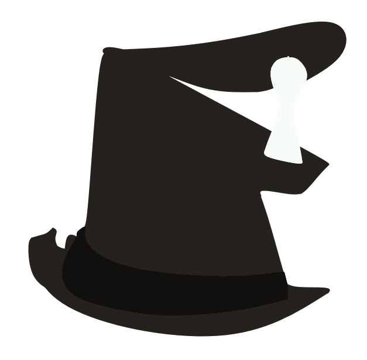

This is a page for a competitive TF2 cup. Basically, its a tournament put on by the community.
This cup is for the 6v6 format and meant for newer players to the competitive scene.
Players will be expected to be newer competitive players though. At most, UGC Steel/non-playoff ETF2l
Open/non-playoff OZFortress Open experience.
This cup intends to bring more interest to the
competitive TF2 scene and
expand the community even more.
Why should I play in this?
Playing competitive Team
Fortress 2 can be a very
rewarding experience. When playing competitively, you improve drastically at the game, meet new friends,
and learn
things you would never have learned if you hadn't tried.
Whether you start playing competitively because you're looking for a game to get better at,
because you
wanted to play with your friends, or because you wanted to be good enough to crush your friends, playing
competitive TF2 is super fun.
This cup will not only show you what competitive is like, but there will also be mentors available to
each team to help learn map callouts, positioning, and strategies.
How 'newbie' is this?

Players within the skill ranges of "just got interested in the game" and "have tried competitive before"
are allowed. It is recommended that you at least understand basic game functions and class roles before
participating though. Players will be checked by our staff to ensure that they aren't too skilled for
this cup (just to keep it fair).
Now that you're convinced, you're probably looking for how to join! You can join us
through our Discord . More information is available there.
Sign-ups are open until a week before the US matches (may be subject to change), stay tuned for more
information.
If you already
have a
group of friends you'd like to play on a team with, great work! If not, that's fine too, there are
other players who are looking
for a team also, and we will find you a team.
This tournament is planned to be held on 3
different continents over 3 different weekends.
- North America (July 13-14)
- Europe (July 20-21)
- Australia/Oceania (July 27-28)
You'll be asked what continent you're from (or hope to play on if you aren't in one of the
above). Asia and South America may be hosted in the following seasons depending on the success
of this cup.